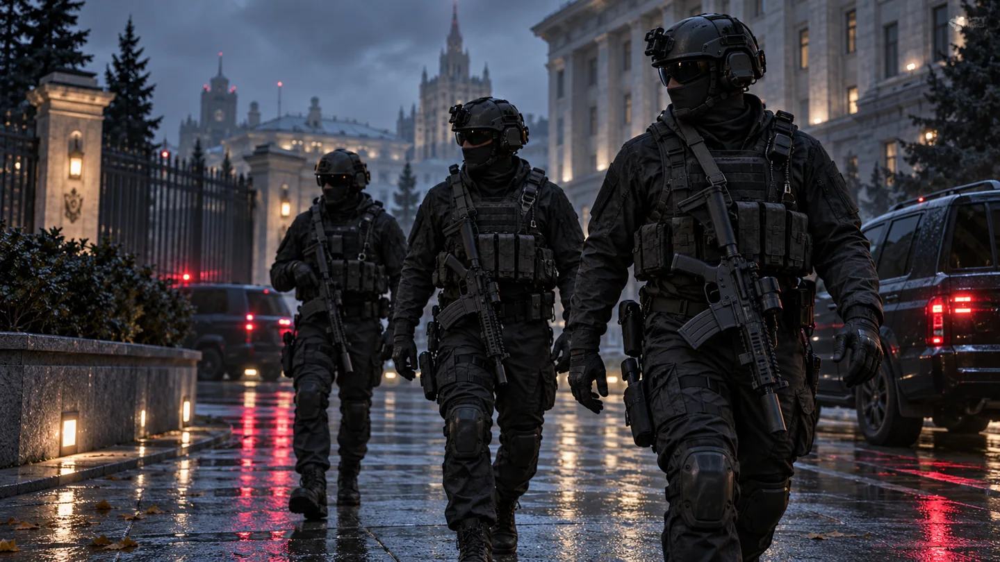
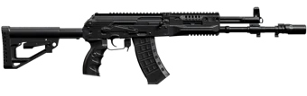
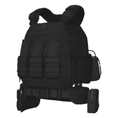

Честь
Уважение к участникам и ответственность за свои действия.
Дисциплина в действиях. Точность в решениях.
Информация о фракции и инструменты сотрудника
в одном пространстве.
Каталог. Материалы. Вес комплекта.
Полезная информация под рукой.
С чего начать знакомство со службой.
ФСБ «Россия Онлайн» — игровая фракция для тех, кому близки командная работа и продуманные действия.
Знакомьтесь с направлениями службы, изучайте справочные материалы и планируйте снаряжение. Основные разделы портала доступны без регистрации.
Подробнее о службе ↗
Соберите несколько предметов. Узнайте расход каждого типа материалов и вес. Сохраните результат в PNG.
Открыть калькулятор ↗Справочные рецепты «Россия Онлайн» · Без регистрации
АК-12180 оружейных материалов×1
Тяжёлый бронежилет30 технических материалов×1Тематические игровые иллюстрации. Не являются документальными кадрами фракции.
Портал игровой фракции: знакомство со службой и инструменты для повседневных задач.
Уважение к участникам и ответственность за свои действия.
Подготовка, слаженная работа и внимательное отношение к деталям.
Общение, взаимная поддержка и общий результат.
Общее описание игрового образа спецслужбы. Полномочия определяются правилами сервера.
Откройте карточку, чтобы узнать о направлении работы.
Ниже — справочная структура из fsbmaj.ru ↗. Состав подразделений ФСБ «Россия Онлайн» ещё не подтверждён. Что нужно уточнить →
От младшего состава до высших офицеров.
Названия приведены по открытому источнику fsbmaj.ru. Звания, их порядок и условия повышения на «Россия Онлайн» требуют подтверждения. Знаки различия — SVG-иллюстрации из исходного справочника; они не подтверждают систему рангов нашей фракции.
Выберите предметы. Рассчитайте материалы и вес комплекта.
Рецепты и изображения перенесены из каталога ГИБДД «Россия Онлайн» ↗. Это справочный расчёт: доступность и рецепты на складе ФСБ пока не подтверждены.
Попробуйте другой запрос.
Инструкции по порталу и открытые источники. Поиск по названию и содержанию.
Устав, регламенты и требования нашей фракции пока не предоставлены. Чужие документы не опубликованы как действующие.
Измените запрос или очистите поле поиска.
Тематические иллюстрации для портала. Откройте кадр, чтобы рассмотреть его.
Изображения созданы с помощью ИИ в стилистике игрового мира. Это иллюстрации, а не документальные кадры фракции. Фотографии сотрудников «Россия Онлайн» пока не предоставлены.
Ниже — ориентиры для подготовки к общению с руководством фракции.
Изучите описание службы и доступные материалы портала.
Уточните у руководства условия, порядок отбора и актуальные направления.
Подтверждённый контакт ФСБ «Россия Онлайн» будет размещён здесь после его предоставления.
Требования к кандидатам, сроки, документы, канал обращения и статус набора пока не подтверждены. Это рекомендации для знакомства, а не утверждённый регламент приёма.
Что уже известно и какие сведения нужны от руководства ФСБ «Россия Онлайн».
Возможно, адрес изменился. Выберите раздел в меню.
На главную ↗